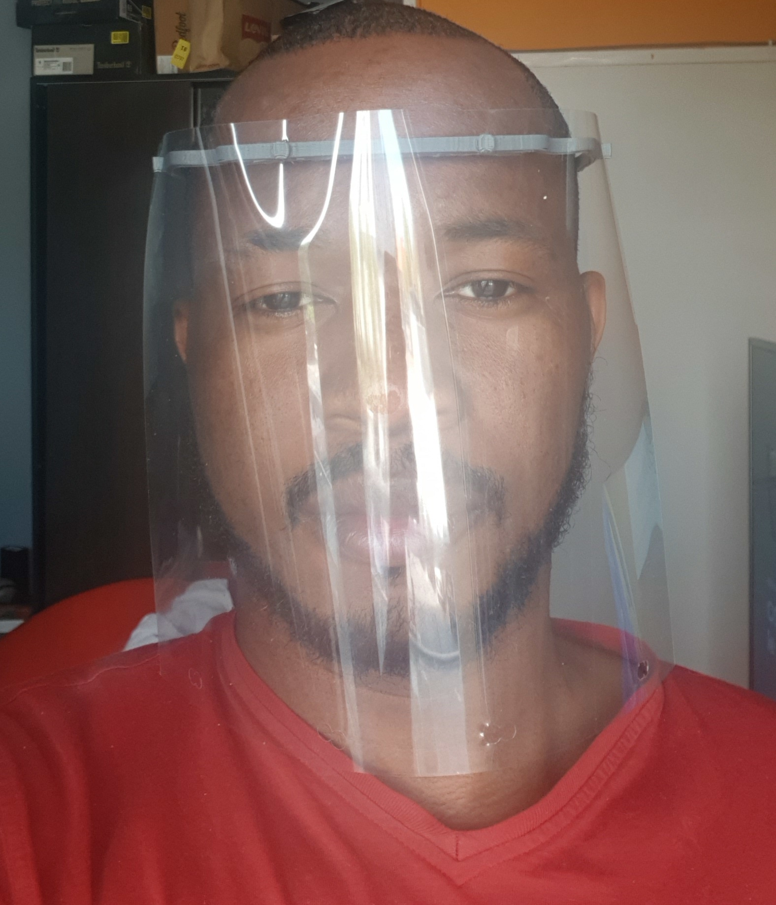

Isaac Djoko
Ingénieur IT, Développeur, Data Scientist,
IT support et Electronicien.
0032472062416 / djokoisaac@gmail.com
Intelligence Artificielle Opérationnelle (AIOps) pour Infrabel en 2020
Dans le cadre de mon TFE, je mène un travail pour la mise en oeuvre d’une solution d’intelligence artificielle opérationnelle dans le système d’InFrabel.
Le but est d’appliquer des techniques de machine learning sur les Big-Data d'Infrabel pour faire évoluer le système d’information vers un système prédictif et prescriptif , donc intelligent . Deux défis principaux se degagent:
- Jouer le rôle de Data-Architect pour extraire et formater les données utiles;
- Jouer le rôle de Data-Scientist car les modèles à développer sont divers, fonction des données et des cas d'utilisation;

Visières Anti-Covid 19 en 2020 (Impression 3D)
Suite à la pandémie de la Covid 19, j’ai pris l’initiative en tant que technicien d’apporter mon aide aux soignants et personnes dans le besoin d’une protection faciale.
J’ai donc décidé de réaliser 1000 visières de protection qui ont été distribuées dans certains hôpitaux, des pharmacies et aux personnes nécessiteuses.
La production a été faite à partir de mon imprimante 3D Alfawise.
|  | |
Bepsim Sarl en 2020 (Developpement Web)
L'objectif était de réaliser un site web pour une jeune entreprise dans le domaine de la sécurité incendie.
Après avoir défini la charte graphique et le design, j’ai réalisé un site web statique qui présente l’entreprise Bepsim SARL et les différents services proposés par cette dernière. Pour le moment, le site est optimisé pour PC.
Site web: https://bepsim.com
Developement Mobile pour Solarly Sarl en 2019
L’objectif était de Développer une application Android pour le monitoring et le contrôle par USB du module solaire SolarlyBox.
L’application a été réalisée avec React-Native pour respecter l’écosystème de l’entreprise qui possédait déjà des applications React.
Trois fonctions principales ont été implémentées:
- Mettre à jour le Firmware du module via USB;
- Changer la configuration du module via USB;
- Accéder à la SolarlyBox en ligne de commande;
IT Support chez IKEA Zaventem (2016-2018)
En tant IT-support pour IKEA Belgique, j’ai contribué au renouvellement et la mise à jour du système d’information d’IKEA Zaventem. l’objectif du projet était de mettre à jour le système, afin qu’il respecte les nouveaux standards. Pour cela il fallait revoir l’architecture réseaux du site et effectuer le renouvellement de l’ensemble des équipements IT (ordinateurs, serveurs, imprimantes, routeurs, switchs, etc...) . En parallèle, en tant que IT-support, je devais resoudre au quotidien une partie des incidents soumis par les clients à travers la Belgique.
Idesk en 2019 (developpement Web)
L’objectif de ce projet était de réaliser une application qui permet de gérer les incidents dans une entreprise.
L’application intègre un gestionnaire d'employés et d'incidents, ainsi q'un espace d’administration.
Les défis techniques étaient de prendre en main les frameworks Symfony et angular pour la version web, et Ionic pour la version mobile.
L’application étant couplée à firebase par API pour la gestion de la base de données.
https://github.com/usheraac/projet_symfony.git
https://github.com/usheraac/Idesk-Angular8.git
https://github.com/usheraac/Idesk_ionic.git
Globus Sarl en 2014 (Infographie)
À l’initiative de l’entreprise Globus dans le besoin d’un site web, j’ai été approché pour réaliser pour cette dernière un cahier des charges de leur site web et la création d’un logo. Ce logo a été réalisé essentiellement avec des outils d’Adobe en l’occurrence Photoshop et Illustrator. L’aspect Métallisé renvoi au domaine technologique, et des effets de transparence et de biseautage ont été utilisés pour mettre en relief l’identité unique du logo de Globus Sarl.
Détecteur sonore en 2018 (Electronique)
Le but de ce projet était de réaliser un système de lumière psychédélique qui permet de gérer le niveau d’éclairage de 3 ampoules de couleurs différentes (RVB), ce montage est destiné à animer une discothèque ou une salle de fête.
Pour sa réalisation, j’ai dû faire un schématique et un footPrint grâce à l’application Altium Designer avant de faire l’impression du PCB en double couches en laboratoire.
Système Hydroponique en 2015 (Electronique)
l’objectif de ce projet était de réaliser un système d’agriculture hors-sol. Pour cela, en équipe de quatre, nous avons construit un système régulé électroniquement par une Arduino Uno qui permettait de contrôler les paramètres essentiels (PH, luminosité, température, humidité) pour la croissance et la vie d’une plante, ce qui rend la solution idéale pour les centres urbains.
L’avantage étant de cultiver une plus grande quantité, en moins de temps, sans tenir compte de la méteo.